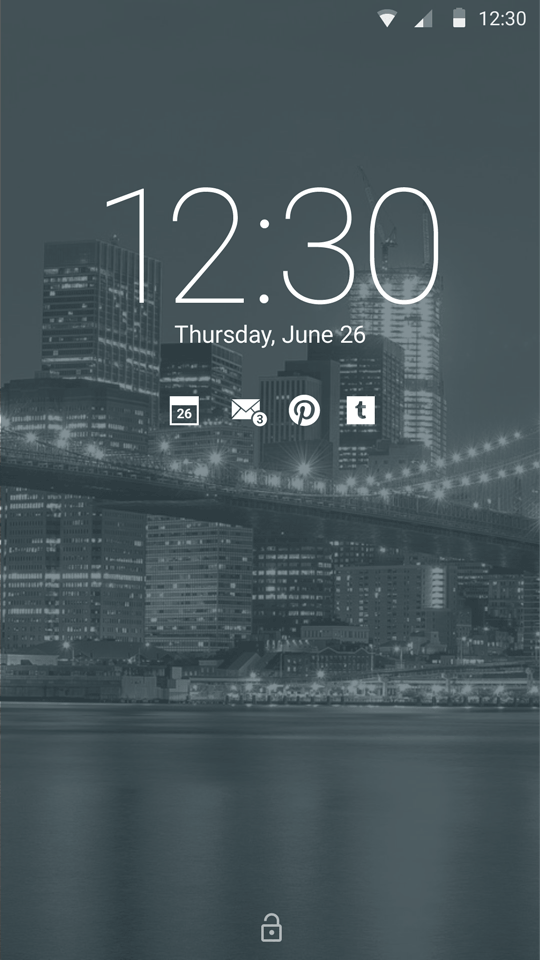
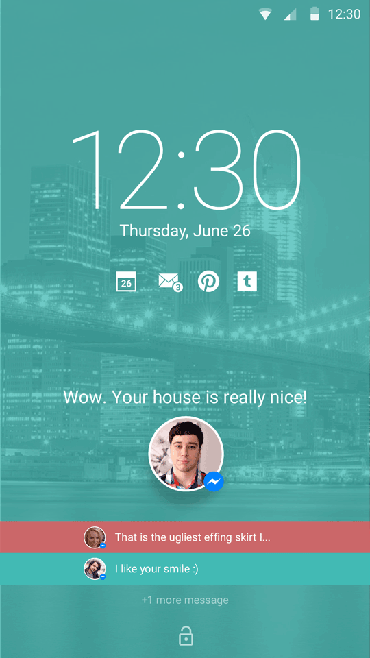
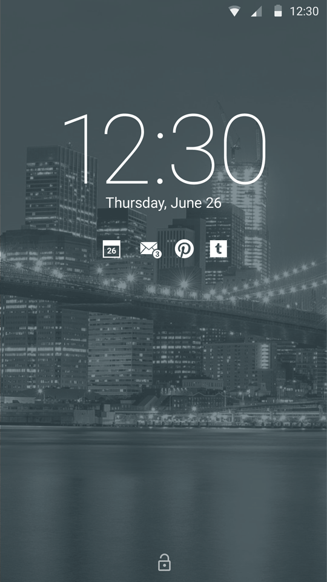
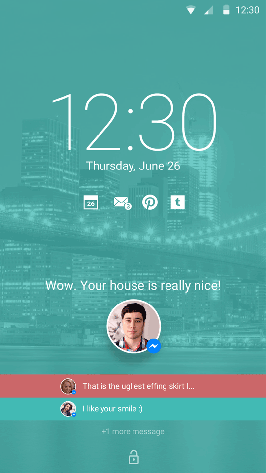
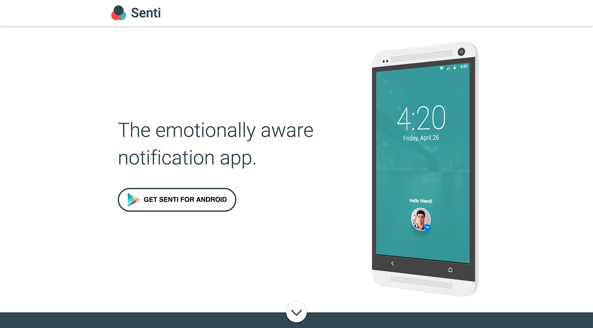

Senti Notifications
Emotionally aware notification app
The concept for this project arose when I began thinking about my previous internship at a social media agency and how it was common practice to analyze the messages of tweets to gauge the sentiment as either a negative or positive. At the same time I was also exploring the idea of how mobile notification are quite devoid of context. For example, you receive the same vibration for a message that simply says “hello” as you do with a message about a medical or family emergency.
Link to interactive prototype →
From these ideas, I came up with the concept of an Android app that analyzes the text from messaging app notifications and gives different feedback based on the negative or positive nature of the message. This feedback occurs through a unique vibration/haptics, ring tone, and different color of unlock screen depending on if its positive or negative. You can learn more from the product website and the prototype below.
The main concept of this project was more of a provocation. Although I made sure that this app could be created with current technology, I more so wanted to use it as a way to start a conversation about how our mobile devices could be more aware of the context around them. A step towards making them feel more human.
Onboarding Flow
Notification Examples
 



Marketing Website

Back to Work